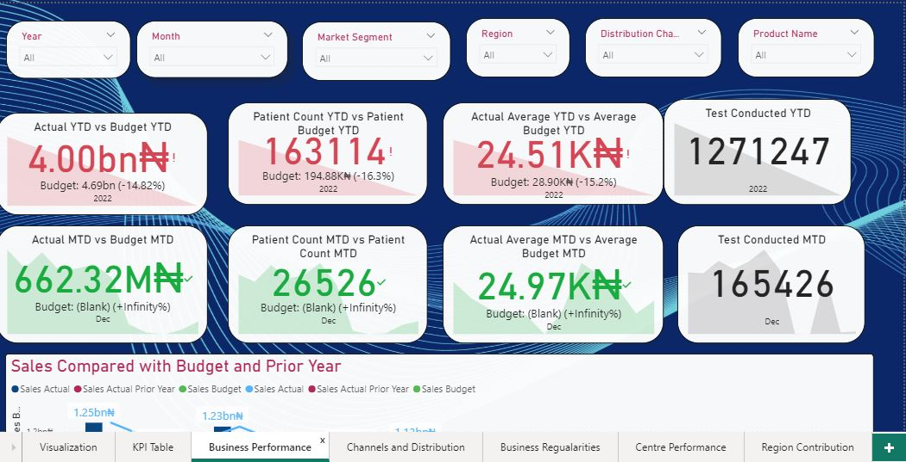

Data cleaning is an essential step in preparing data for analysis in SQL. Cleaning data involves identifying and addressing errors, inconsistencies, and missing values in the dataset. In this project, we will explore common data cleaning techniques in SQL.
The first step in data cleaning is to identify missing values in the dataset. We can use SQL queries to count the number of missing values in each column of the dataset. We can then decide how to address these missing values, such as filling them in with an average or median value, or removing them from the dataset entirely.
Next, we will identify and correct any errors or inconsistencies in the data. This may involve checking for typos or formatting errors in the data and correcting them using SQL queries. For example, we may want to convert all text to lowercase or uppercase to ensure consistency in the data.

Exploring healthcare data in SQL can provide valuable insights into patterns and trends that can inform public health decision-making. In this project, we will use SQL to analyze healthcare data and identify key metrics that can be used to improve patient outcomes and reduce healthcare costs.Exploring healthcare data in SQL can provide valuable insights into patterns and trends that can inform public health decision-making. By using SQL to analyze and visualize this data, we can identify
Tableau is a powerful data visualization tool that can be used to analyze and visualize COVID-19 data in the UK. In this project, we will use Tableau to explore the impact of the COVID-19 pandemic on different regions of the UK, as well as the demographic groups that have been most affected.
Our dataset contains information about COVID-19 cases, deaths, and hospitalizations in the UK. The data is updated daily and comes from reliable sources such as the Office for National Statistics (ONS) and Public Health England (PHE).Next, we will analyze the data by demographic group. We will create visualizations that show the number of cases and deaths by age group and gender. This will help us identify groups that may be at higher risk of infection and inform targeted public health interventions.

PowerBI is a powerful business intelligence tool that can be used to analyze and visualize healthcare data. In this project, we will use PowerBI to explore healthcare data related to hospital admissions, patient demographics, and health outcomes.This PowerBI project will provide valuable insights into healthcare data and help inform decision-making for healthcare providers and policymakers. By using PowerBI to analyze and visualize this data, we can identify trends and patterns that may not be immediately apparent, and make data-driven decisions to improve the quality of care for patients.